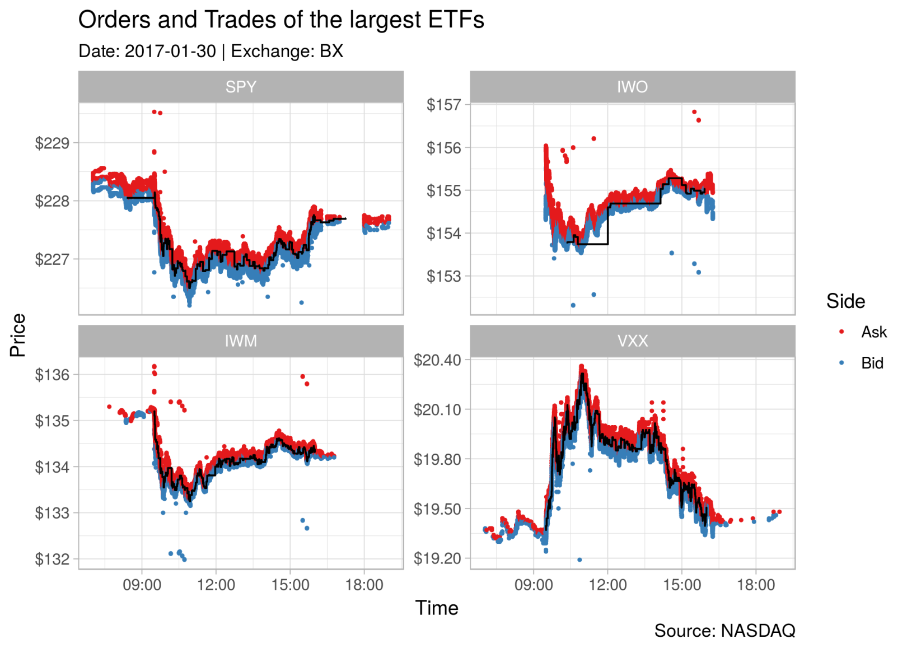

Introducing RITCH: Parsing ITCH Files in R (Finance & Market Microstructure)
Recently I was faced with a file compressed in NASDAQ’s ITCH-protocol, as I wasn’t able to find an R-package that parses and loads the file to R for me, I spent (probably) way to much time to write one, so here it is. But you might wonder, what exactly is ITCH and why should I care? Well, ITCH is the outbound protocol NASDAQ uses to communicate market data to its clients, that is, all information including market status, orders, trades, circuit breakers, etc. with nanosecond timestamps for each day and each exchange. Kinda a must-have if you are looking into market microstructure, a good-to-have-looked-into-it if you are interested in general finance and/or if you are interested in data analytics and large structured datasets. If you are wondering where you might get some of these fancy datasets in the first place, I have good news for you. NASDAQ provides some sample datasets (6 days for 3 exchanges (NASDAQ, PSX, and BX), together about 25GBs gzipped) on its FTP server: ftp://emi.nasdaq.com/ITCH/
The RITCH Package
Now that I (hopefully) have your attention, let me represent to you RITCH an R package that parses ITCH-files (version 5.0).
Currently the package only lives on GitHub (https://github.com/DavZim/RITCH), but it should find its way into CRAN eventually.
Until then, you have to use devtools or remotes to install it
# install.packages("remotes")
remotes::install_github("DavZim/RITCH")And you should be good to go (if not, please let me know!).
RITCH so far has a very limited scope: extracting the messages from the ITCH-file plus some functions to count messages.
The package leverages C++ and the excellent Rcpp library to optimise parsing.
RITCH itself does not contain any data as the datasets are too large for any repos and I have no copyright on the datasets in any way.
For the following code I will use the 20170130.BX_ITCH_50-file from NASDAQ’s FTP-server, as its not too large at 714MB gzipped (1.6GB gunzipped), but still has almost 55 million messages.
All functions can take the gzipped or unzipped files, but if you use the file more than once and hard-drive space is not of utmost concern, I suggest you gunzip the file by hand (i.e., use R.utils::gunzip(file, new_file, remove = FALSE) in R or gunzip -k YYYYMMDD.XXX_ITCH_50.gz in the terminal) and call the functions on the “plain”-file.
I will address some concerns to size and speed later on.
To download and prepare the data in R, we can use the following code
file <- "20170130.BX_ITCH_50.gz"
# might take some time as it downloads 714MB
if (!file.exists(file))
download.file("ftp://emi.nasdaq.com/ITCH/20170130.BX_ITCH_50.gz",
file, mode = "wb")
# gunzip the file, but keep the original file
R.utils::gunzip("20170130.BX_ITCH_50.gz", "20170130.BX_ITCH_50", remove = FALSE)First, we want to get a general overview of the file, which we can do with count_messages()
library(RITCH)
file <- "20170130.BX_ITCH_50"
msg_count <- count_messages(file, add_meta_data = TRUE)
#> [Counting] 54473386 messages found
#> [Converting] to data.table
msg_count
#> msg_type count msg_name msg_group doc_nr
#> 1: S 6 System Event Message System Event Message 4.1
#> 2: R 8371 Stock Directory Stock Related Messages 4.2.1
#> 3: H 8401 Stock Trading Action Stock Related Messages 4.2.2
#> 4: Y 8502 Reg SHO Restriction Stock Related Messages 4.2.3
#> 5: L 6011 Market Participant Position Stock Related Messages 4.2.4
#> 6: V 2 MWCB Decline Level Message Stock Related Messages 4.2.5.1
#> 7: W 0 MWCB Status Message Stock Related Messages 4.2.5.2
#> 8: K 0 IPO Quoting Period Update Stock Related Messages 4.2.6
#> 9: J 0 LULD Auction Collar Stock Related Messages 4.2.7
#> 10: A 21142017 Add Order Message Add Order Message 4.3.1
#> 11: F 20648 Add Order - MPID Attribution Message Add Order Message 4.3.2
#> 12: E 1203625 Order Executed Message Modify Order Messages 4.4.1
#> 13: C 8467 Order Executed Message With Price Message Modify Order Messages 4.4.2
#> 14: X 1498904 Order Cancel Message Modify Order Messages 4.4.3
#> 15: D 20282644 Order Delete Message Modify Order Messages 4.4.4
#> 16: U 3020278 Order Replace Message Modify Order Messages 4.4.5
#> 17: P 330023 Trade Message (Non-Cross) Trade Messages 4.5.1
#> 18: Q 0 Cross Trade Message Trade Messages 4.5.2
#> 19: B 0 Broken Trade Message Trade Messages 4.5.3
#> 20: I 0 NOII Message Net Order Imbalance Indicator (NOII) Message 4.6
#> 21: N 6935487 Retail Interest Message Retail Price Improvement Indicator (RPII) 4.7
#> msg_type count msg_name msg_group doc_nrAs you can see, there are a lot of different message types.
Currently this package parses only messages from the group “Add Order Messages” (type ‘A’ and ‘F’), “Modify Order Messages” (type ‘E’, ‘C’, ‘X’, ‘D’, and ‘U’), and “Trade Messages” (type ‘P’, ‘Q’, and ‘B’).
You can extract the different message-types by using the functions get_orders, get_modifications, and get_trades, respectively.
The doc-number refers to the section in the official documentation (which also contains more detailed description what each type contains).
If you are annoyed by the feedback the function gives you ([Counting] ... [Converting]...), you can always turn the feedback off with the quiet = TRUE option (this applies to all functions).
Lets try to parse the first 10 orders
orders <- get_orders(file, 1, 10)
#> 10 messages found
#> [Loading] .
#> [Converting] to data.table
#> [Formatting]
orders
#> msg_type locate_code tracking_number timestamp order_ref buy shares stock price mpid date datetime
#> 1: A 7584 0 2.520001e+13 36132 TRUE 500000 UAMY 0.0001 NA 2017-01-30 2017-01-30 07:00:00
#> 2: A 3223 0 2.520001e+13 36133 TRUE 500000 GLOW 0.0001 NA 2017-01-30 2017-01-30 07:00:00
#> 3: A 2937 0 2.520001e+13 36136 FALSE 200 FRP 18.6500 NA 2017-01-30 2017-01-30 07:00:00
#> 4: A 5907 0 2.520001e+13 36137 TRUE 1500 PIP 3.1500 NA 2017-01-30 2017-01-30 07:00:00
#> 5: A 5907 0 2.520001e+13 36138 FALSE 2000 PIP 3.2500 NA 2017-01-30 2017-01-30 07:00:00
#> 6: A 5907 0 2.520001e+13 36139 TRUE 3000 PIP 3.1000 NA 2017-01-30 2017-01-30 07:00:00
#> 7: A 5398 0 2.520001e+13 36140 TRUE 200 NSR 33.0000 NA 2017-01-30 2017-01-30 07:00:00
#> 8: A 5907 0 2.520001e+13 36141 FALSE 500 PIP 3.2500 NA 2017-01-30 2017-01-30 07:00:00
#> 9: A 2061 0 2.520001e+13 36142 FALSE 1300 DSCI 7.0000 NA 2017-01-30 2017-01-30 07:00:00
#> 10: A 1582 0 2.520001e+13 36143 TRUE 500 CPPL 17.1500 NA 2017-01-30 2017-01-30 07:00:00The same works for trades using the get_trades() function and for order modifications using the get_modifications() function.
To speed up the get_* functions, we can use the message-count information from earlier.
For example the following code yields the same results as above, but saves time.
orders <- get_orders(file, 1, count_orders(msg_count))
trades <- get_trades(file, 1, count_trades(msg_count)) If you want to get more information about each field, you can have a look at the official ITCH-protocol specification manual or you can get a small data.table about each message type by calling get_meta_data().
Having a Look at some the most traded ETFs
To have at least one piece of eye-candy in this post, lets have a quick go at the orders and trades of SPY (an S&P 500 ETF and one of the most traded assets, in case you didn’t know), IWO (Russel 2000 Growth ETF), IWM (Russel 2000 Index ETF), and VXX (S&P 500 VIX ETF) on the BX-exchange. In case you are wondering, I got these four tickers with
library(magrittr)
get_orders(file, 1, count_orders(msg_count), quiet = T) %>%
.$stock %>%
table %>%
sort(decreasing = T) %>%
head(4)
#> .
#> SPY IWO IWM VXX
#> 135119 135016 118123 117395First we load the data (orders and trades) from the file, then we do some data munging, and finally plot the data using ggplot2.
library(ggplot2)
# 0. load the data
orders <- get_orders(file, 1, count_orders(msg_count))
#> 21162665 messages found
#> [Loading] ................
#> [Converting] to data.table
#> [Formatting]
trades <- get_trades(file, 1, count_trades(msg_count))
#> 330023 messages found
#> [Loading] ................
#> [Converting] to data.table
#> [Formatting]
# 1. data munging
tickers <- c("SPY", "IWO", "IWM", "VXX")
dt_orders <- orders[stock %in% tickers]
dt_trades <- trades[stock %in% tickers]
# for each ticker, use only orders that are within 1% of the range of traded prices
ranges <- dt_trades[, .(min_price = min(price), max_price = max(price)), by = stock]
# filter the orders
dt_orders <- dt_orders[ranges, on = "stock"][price >= 0.99 * min_price & price <= 1.01 * max_price]
# replace the buy-factor with something more useful
dt_orders[, buy := ifelse(buy, "Bid", "Ask")]
dt_orders[, stock := factor(stock, levels = tickers)]
# 2. data visualization
ggplot() +
# add the orders to the plot
geom_point(data = dt_orders,
aes(x = datetime, y = price, color = buy), size = 0.5) +
# add the trades as a black line to the plot
geom_step(data = dt_trades,
aes(x = datetime, y = price)) +
# add a facet for each ETF
facet_wrap(~stock, scales = "free_y") +
# some Aesthetics
theme_light() +
labs(title = "Orders and Trades of the largest ETFs",
subtitle = "Date: 2017-01-30 | Exchange: BX",
caption = "Source: NASDAQ",
x = "Time", y = "Price",
color = "Side") +
scale_y_continuous(labels = scales::dollar) +
scale_color_brewer(palette = "Set1")
Now its up to you to do something interesting with the data, I hope RITCH can help you with it.
Speed & RAM concerns
If your machine struggles with some files, you can always load only parts of a file as shown above.
And of course, make sure that you have only necessary datasets in your R-environment and that no unused programs are open (Chrome with some open tabs in the background happily eats your RAM).
If your machine is able to handle larger datasets, you can increase the buffersize of each function call to 1GB or more using the buffer_size = 1e9 argument, increasing the speed with which a file is parsed.
Addendum
If you find this package useful or have any other kind of feedback, I’d be happy if you let me know. Otherwise, if you need more functionality for additional message types, please feel free to create an issue or a pull request on GitHub.
David Zimmermann, PhD
Data Scientist
I am an economist by training, turned programmer/data scientist who loves to program with R, Python, and C++.